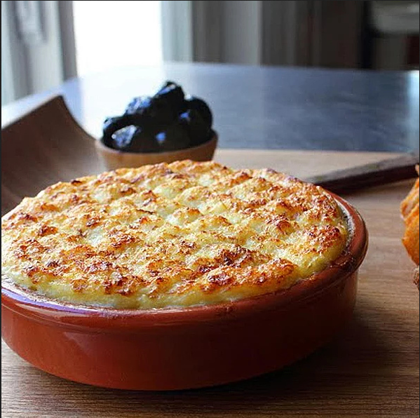

Brandade

Description
There are certain things that if I see on a menu, I will almost
always order them, and brandade is one of those things. This amazing
dish from the south of France can be made many different ways,
but it's usually some sort of combination of salt cod, potato, garlic,
and olive oil. This should always be baked and eaten piping hot,
ideally with some homemade crostini.
Ingredients
- 1 pound salted cod fish
- 1.5 cups whole milk
- 5 sprigs fresh thyme
- 2 bay leaves
- 1/2 lemon, juiced
- 1 teaspoon lemon zest
Steps
- Preheat oven to 450 degrees F (230 degrees C). Lightly
grease a baking dish and set dish on a baking sheet.
- Rinse salt cod under cold water, transfer to a sealable
container and cover with several inches of cold water. Soak
cod in the refrigerator, changing the water every few hours,
for 24 to 36 hours. Remove cod from water and cut into
evenly-sized pieces.
- Stir cod, milk, thyme, bay leaves, and cayenne pepper together
in a pot over medium-high heat. Cook until fish begins to
flake; 7 to 15 minutes. Remove from heat and strain; reserve
cooking liquid and transfer fish to a bowl.
- Place potatoes and garlic in a large pot and cover with water;
bring to a boil. Reduce heat to medium-low and simmer until
tender, about 20 minutes. Drain.
- Mash cod, a few splashes reserved cooking liquid, and lemon
zest together in a bowl. Pour in remaining reserved cooking
liquid and potatoes; mash until desired consistency is
reached. Stir in 1/2 of the olive oil, lemon juice, and black
pepper until smooth. Add remaining olive oil and blend until
smooth. Season with salt. Pour mixture into prepared baking
dish. Spread creme fraiche over the top and score the top with
a spoon to create a crisscross surface.
- Bake in the preheated oven until browned and bubbling, about
20 minutes